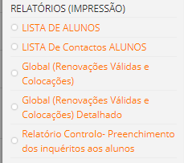
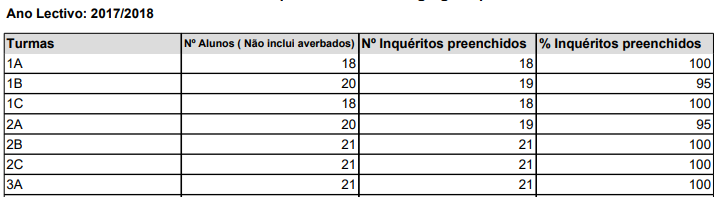

Relatórios
Os relatórios são documentos desenvolvidos em PDF que auxiliam as escolas a terem uma ideia global da sua instiuição aos seus alunos e apoios dados aos mesmos. Neste separador podemos encontrar cinco documentos fundamentais, nomeadamente:

1- Lista de alunos:
Lista completa de todos os alunos que frequenta a instituição, sinalizando os alunos que recebem apoio aos manuais e material escolar.
2- Contactos Lista completa dos nomes das crianças, dos encarregados de educação e do contacto telefónico.
3- Renovações
Lista de alunos com renovação válida no ano corrente.
4- Renovações dealhado
Lista de alunos com dados de identificação do aluno e do encarregado do educação que foram colocados na escola.
5- Inquerito dos alunos
No separador inqueritos aos alunos, ao clicar consegue ter a preceção de como está a decorrer o preenchimento dos mesmos por parte dos professores. Informa a tuma, o número de alunos e quantos inquerito já foram ou não preenchidos, dando uma percentagem final.
